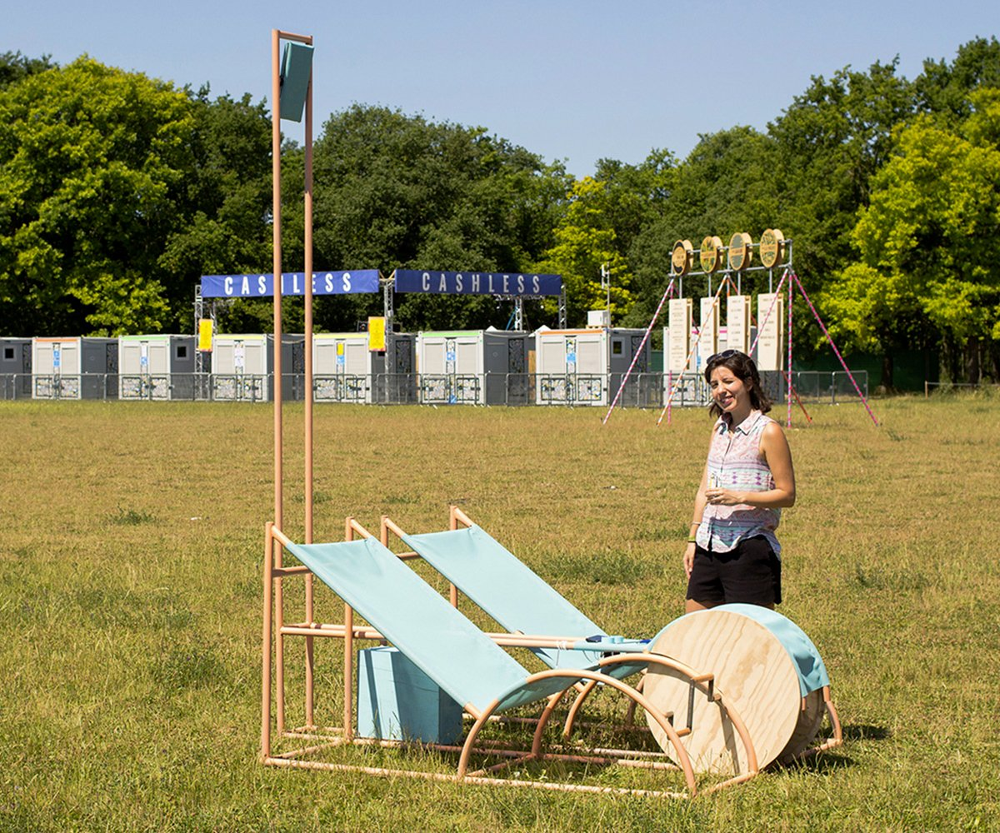
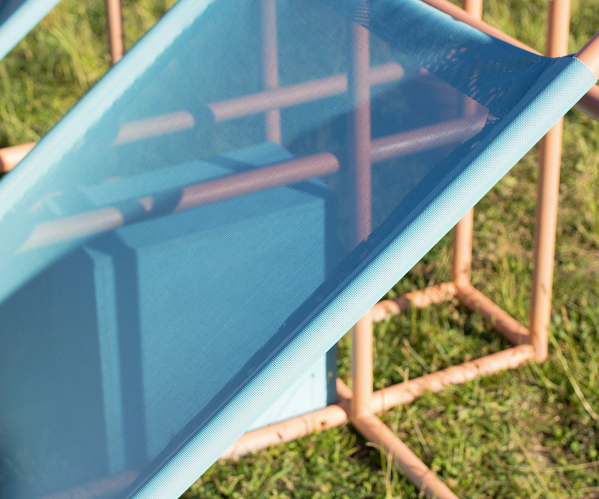
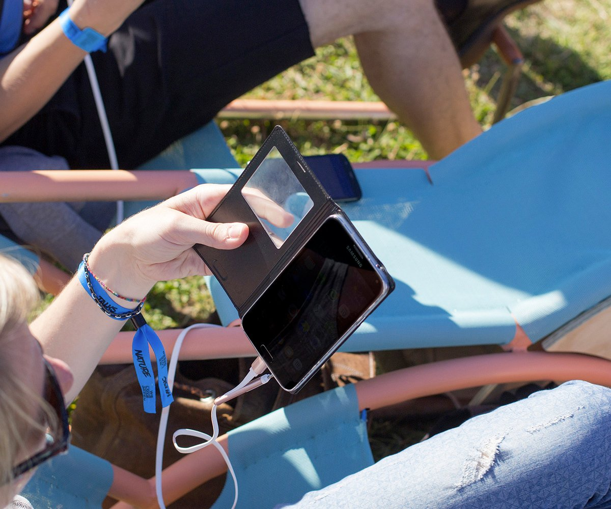
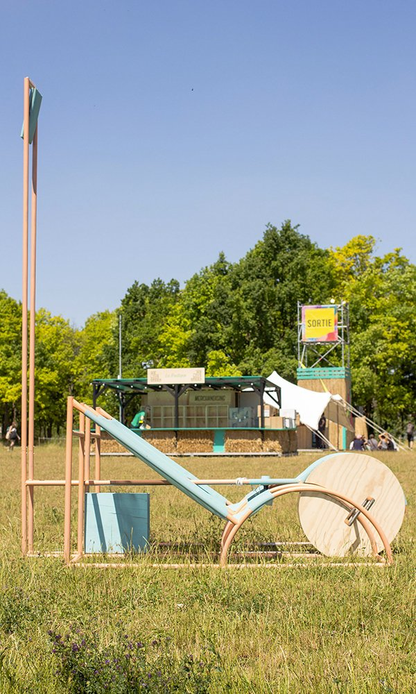
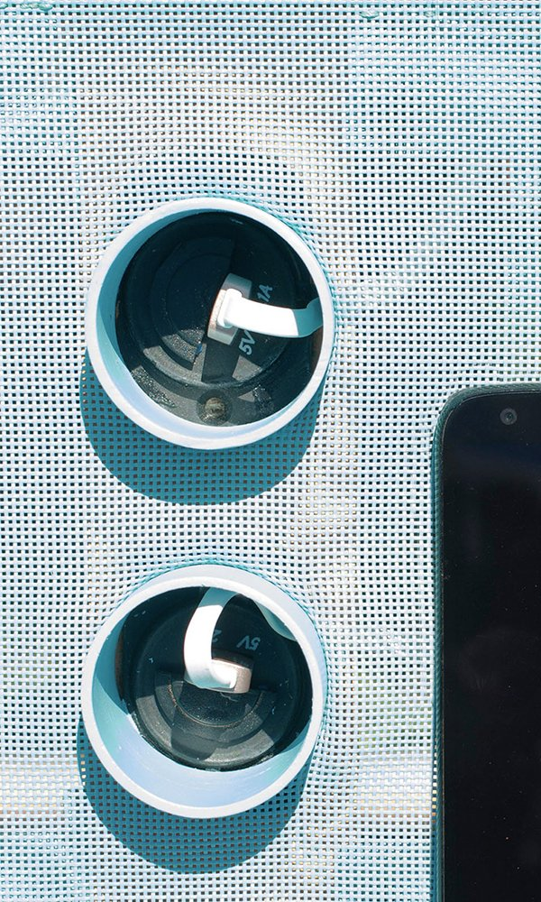
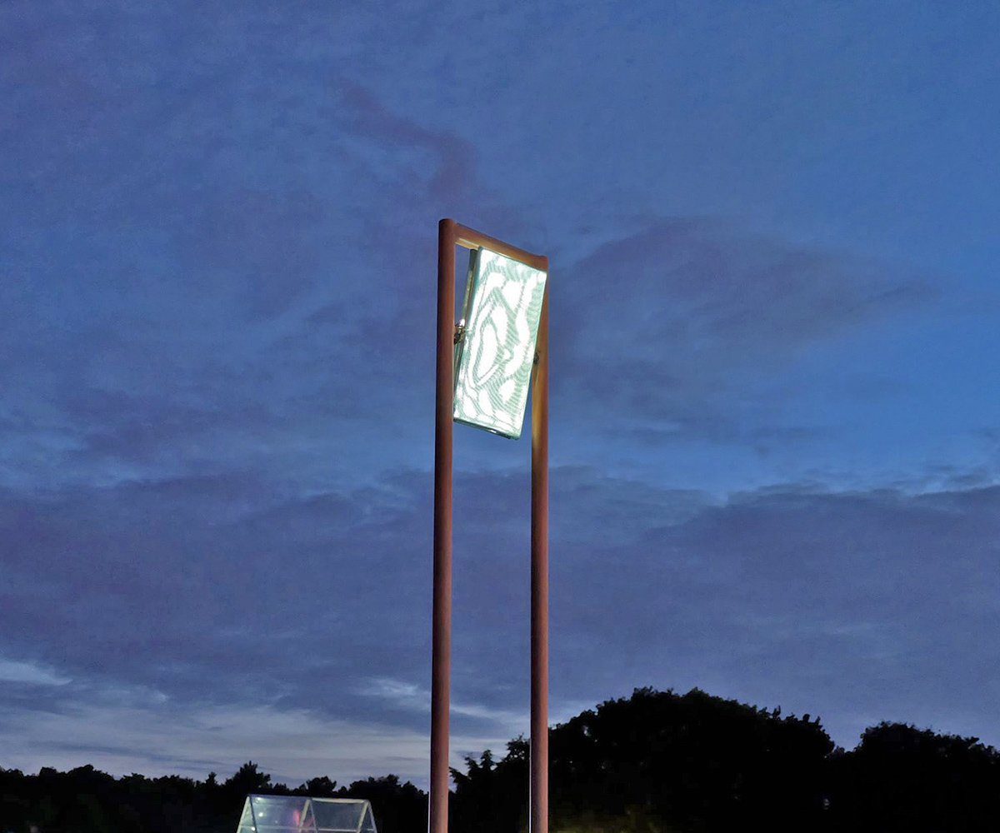
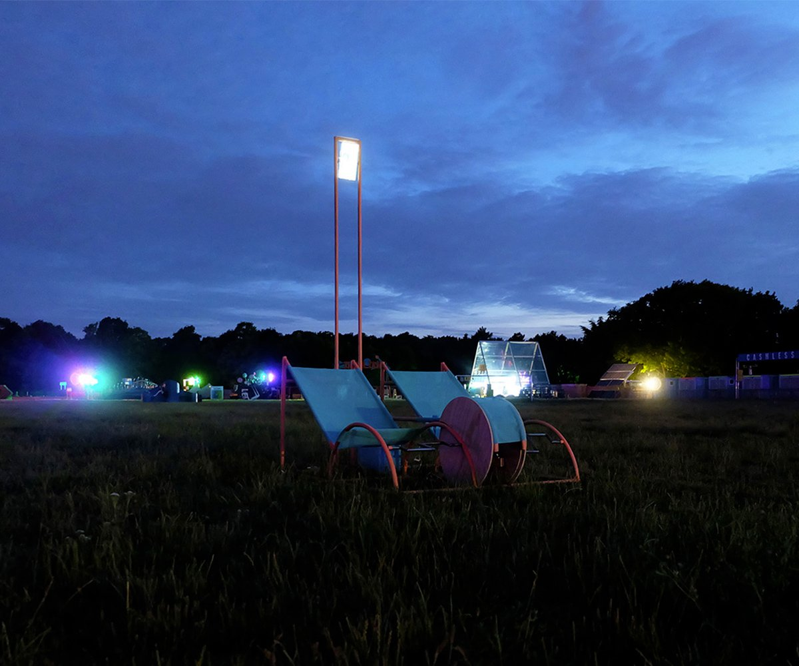
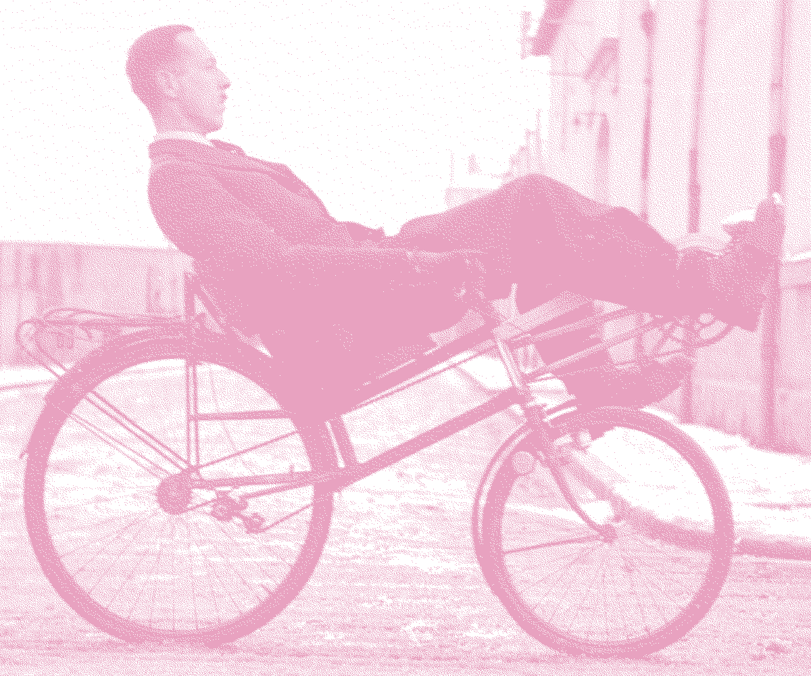
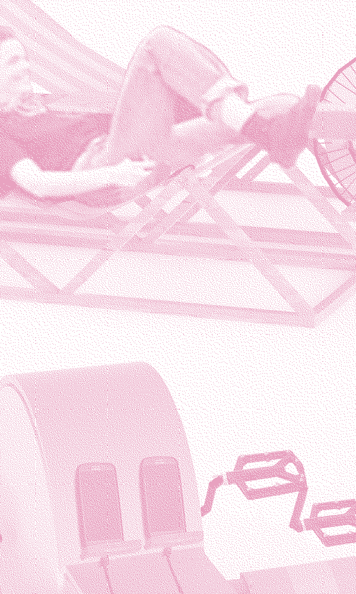
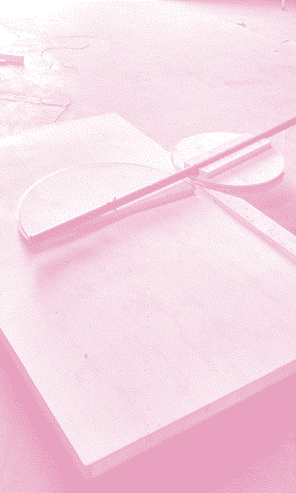

PÉDALO DYNAMO










Pédalo dynamo grew out of a summery daydream in which the energy festival-goers need (charging a phone, lighting the way…) is produced without too much effort. Pédalo dynamo tells the story of a pedalo-esque landscape wedded to an old-fashioned yet still-used mechanical technology: the dynamo and the bicycle.
With
La Chouette, Baptiste Lefèvre, Lenoir Services, Mathilde Roussillat, Serge Ferrari, We Love Green, Jimena Zúñiga